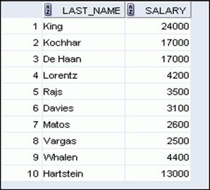

Отделу HR необходимы данные о высокооплачиваемых и низкооплачиваемых сотрудниках. Измените файл lab2_1.sql и выведите фамилии и оклады всех служащих, чей оклад не входит в диапазон от $5000 до $12000. Сохраните команду SQL в файле lab_02_03.sql

select e.last_name
, trunc(e.salary)
from employees e
where e.salary between 5000 and 12000
order by e.salary desc